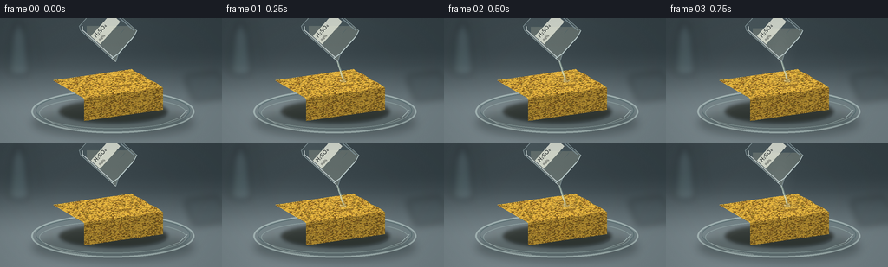
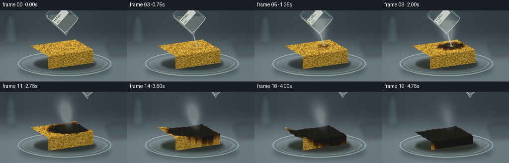

CODING AGENTS AS PIXEL WORLD MODELS
traex/GPT-6.1-Sol · phygen_155
点击播放 · 原生 RGB 像素
逐轮保存的候选
回放视频、检查图与代码变化。
每份候选均可单独播放。实际图片检查记录在下方工具轨迹中。
候选 01播放与检查图
点击播放 · 原生 RGB 像素
展开代码变化
--- 上一保存版本
+++ 本次保存版本
@@ -0,0 +1,271 @@
+from pathlib import Path
+import numpy as np
+from PIL import Image, ImageDraw, ImageFilter, ImageFont
+import artifact_io
+
+ROOT = Path(__file__).resolve().parent
+S = 3
+W, H = 256*S, 144*S
+rng = np.random.default_rng(155)
+
+def smooth(a,b,x):
+ t=np.clip((x-a)/(b-a),0,1)
+ return t*t*(3-2*t)
+
+def poly(d, points, **kw):
+ d.polygon([(int(x*S),int(y*S)) for x,y in points],**kw)
+def line(d, points, fill, width=1):
+ d.line([(int(x*S),int(y*S)) for x,y in points], fill=fill,width=max(1,int(width*S)),joint='curve')
+def ellipse(d, box, **kw):
+ d.ellipse(tuple(int(k*S) for k in box),**kw)
+
+# Fixed porous cellulose material: multiscale grain, irregular open cells, shaded rims.
+def material(seed,tw=720,th=480):
+ rr=np.random.default_rng(seed)
+ coarse=Image.fromarray(np.uint8(rr.uniform(65,190,(45,65)))).resize((tw,th),Image.Resampling.BICUBIC)
+ grain=np.array(coarse)/255-.5
+ fine=rr.normal(0,1.8,(th,tw))
+ col=np.array([229,181,64])[None,None,:]+grain[...,None]*np.array([42,37,18])+fine[...,None]
+ im=Image.fromarray(np.uint8(np.clip(col,0,255))); d=ImageDraw.Draw(im)
+ for j in range(1750):
+ x=rr.uniform(-5,tw+5); y=rr.uniform(-5,th+5)
+ r=rr.uniform(1.7,6.5) if j<1300 else rr.uniform(6,11)
+ rx=r*rr.uniform(.7,1.6); ry=r*rr.uniform(.65,1.3)
+ theta=np.linspace(0,np.pi*2,13)[:-1]
+ rad=rr.uniform(.77,1.14,len(theta))
+ points=list(zip(x+rx*rad*np.cos(theta),y+ry*rad*np.sin(theta)))
+ d.polygon([(a+1.2,b+1.7) for a,b in points],fill=(248,208,99))
+ d.polygon(points,fill=(153+int(rr.uniform(-15,15)),111+int(rr.uniform(-8,8)),36))
+ d.polygon([(x+(a-x)*.69,y+(b-y)*.63-.5) for a,b in points], fill=(102+int(rr.uniform(0,22)),76+int(rr.uniform(0,17)),29))
+ if j%3==0:
+ d.line([(x-rx*.5,y+ry*.62),(x+rx*.3,y+ry*.66)],fill=(223,170,62),width=1)
+ return np.array(im,dtype=float)
+
+MAT_TOP=material(28)
+MAT_FRONT=material(31)
+MAT_RIGHT=material(9)
+th,tw=MAT_TOP.shape[:2]
+VV,UU=np.mgrid[0:th,0:tw].astype(float); UU/=(tw-1); VV/=(th-1)
+# A persistent roughness pattern rather than framewise random speckle.
+rough=np.asarray(Image.fromarray(np.uint8(rng.uniform(0,255,(80,120)))).resize((tw,th),Image.Resampling.BICUBIC))/255
+fracture=Image.new('L',(tw,th),0); fd=ImageDraw.Draw(fracture)
+for i in range(55):
+ x,y=rng.uniform(0,tw),rng.uniform(0,th)
+ pts=[(x,y)]
+ ang=rng.uniform(0,6.28)
+ for k in range(rng.integers(3,8)):
+ ang+=rng.normal(0,.6); x+=np.cos(ang)*rng.uniform(4,12);y+=np.sin(ang)*rng.uniform(4,12);pts.append((x,y))
+ fd.line(pts,fill=int(rng.uniform(80,180)),width=int(rng.integers(1,3)))
+CRACK=np.asarray(fracture)/255
+
+def reaction(u,v,t,depth=0):
+ dist=np.sqrt(((u-.69)/.95)**2+((v-.46)/.96)**2)
+ irregular=.021*np.sin(u*37+v*19)+.023*np.cos(v*31-u*12)+.012*np.sin(u*85+v*47)
+ arrival=.50+dist*3.8+depth*.7+irregular*4
+ return smooth(arrival,arrival+.95,t)
+
+def texture(base,t,face):
+ if face=='top':
+ m=reaction(UU,VV,t)
+ elif face=='front':
+ m=reaction(UU,np.ones_like(VV),t,depth=1-VV)
+ else:
+ m=reaction(np.ones_like(UU),UU,t,depth=1-VV)
+ # A brown intermediate ring, progressing into matte, deeply black porous char.
+ brown=np.array([104,59,24])[None,None,:]*(.65+.35*base/np.array([229,181,64]))
+ charcoal=np.array([25,23,20])[None,None,:]+(base.mean(axis=2)[...,None]-90)*.075+rough[...,None]*8
+ brownmix=smooth(0,.50,m)[...,None]
+ blackmix=smooth(.33,.93,m)[...,None]
+ out=base*(1-brownmix)+brown*brownmix
+ out=out*(1-blackmix)+charcoal*blackmix
+ out-=CRACK[...,None]*smooth(.65,1,m)[...,None]*12
+ # Surface takes a slight glossy amber cast before charring.
+ if face=='top':
+ wet=np.exp(-(((UU-.69)/.12)**2+((VV-.46)/.16)**2))*smooth(.1,.65,t)*(1-smooth(1.9,3,t))
+ out=out*(1-wet[...,None]*.28)+np.array([162,136,72])[None,None,:]*wet[...,None]*.28
+ return np.clip(out,0,255)
+
+def heights(u,v,t):
+ m=reaction(u,v,t)
+ r=(np.sin(u*47+v*21)+np.sin(v*51-u*11)+.45*np.cos(u*91+v*43))/2.45
+ swell=.105*m*(1-smooth(1.1,2.8,t))
+ return 1 + swell - .36*m*smooth(1.7,4.65,t)+r*.050*m + .018*np.sin(u*17)*np.sin(v*14)
+
+def position(u,v,z,t):
+ m=reaction(u,v,t)
+ contraction=.075*m*smooth(2.2,4.75,t)
+ un=.60+(u-.60)*(1-contraction); vn=.53+(v-.53)*(1-contraction)
+ return np.stack([(61+91*un+36*vn)*S,(98-13*un+21*vn-26*z)*S],axis=-1)
+
+def triangle(canvas,pt,uv,tex,light):
+ a,b,c=pt
+ x0=max(0,int(np.floor(pt[:,0].min())));x1=min(W,int(np.ceil(pt[:,0].max()))+1)
+ y0=max(0,int(np.floor(pt[:,1].min())));y1=min(H,int(np.ceil(pt[:,1].max()))+1)
+ if x0>=x1 or y0>=y1:return
+ Y,X=np.mgrid[y0:y1,x0:x1]; X=X+.5;Y=Y+.5
+ den=(b[1]-c[1])*(a[0]-c[0])+(c[0]-b[0])*(a[1]-c[1])
+ if abs(den)<.01:return
+ f=((b[1]-c[1])*(X-c[0])+(c[0]-b[0])*(Y-c[1]))/den
+ g=((c[1]-a[1])*(X-c[0])+(a[0]-c[0])*(Y-c[1]))/den
+ h=1-f-g
+ mask=(f>=-1e-5)&(g>=-1e-5)&(h>=-1e-5)
+ if not mask.any():return
+ tx=(f*uv[0,0]+g*uv[1,0]+h*uv[2,0])*(tw-1)
+ ty=(f*uv[0,1]+g*uv[1,1]+h*uv[2,1])*(th-1)
+ ix=np.clip(tx.astype(int),0,tw-1);iy=np.clip(ty.astype(int),0,th-1)
+ pixels=tex[iy,ix]*light
+ canvas[y0:y1,x0:x1][mask]=pixels[mask]
+
+def draw_mesh(canvas,t):
+ for face in ['right','front','top']:
+ nx,ny=(28,16) if face=='top' else (28,10)
+ q,r=np.meshgrid(np.linspace(0,1,nx+1),np.linspace(0,1,ny+1))
+ if face=='top':u,v=q,r;z=heights(u,v,t)
+ elif face=='front':u,v=q,np.ones_like(q);z=r*heights(u,v,t)
+ else:u,v=np.ones_like(q),q;z=r*heights(u,v,t)
+ pos=position(u,v,z,t);uv=np.stack([q,r],-1)
+ tex=texture({'top':MAT_TOP,'front':MAT_FRONT,'right':MAT_RIGHT}[face],t,face)
+ for j in range(ny):
+ for i in range(nx):
+ inds=[(j,i),(j,i+1),(j+1,i+1),(j+1,i)]
+ p=np.array([pos[a,b] for a,b in inds]);st=np.array([uv[a,b] for a,b in inds])
+ if face=='top':
+ dzx=z[j,i+1]-z[j,i];dzy=z[j+1,i]-z[j,i]
+ light=np.clip(1.01+dzx*1.1+dzy*.8,.72,1.17)
+ else:light=.75 if face=='front' else .58
+ triangle(canvas,p[[0,1,2]],st[[0,1,2]],tex,light)
+ triangle(canvas,p[[0,2,3]],st[[0,2,3]],tex,light)
+
+# Laboratory worktop, soft-focus distant objects and cool studio illumination.
+y,x=np.mgrid[0:H,0:W];xx=x/S;yy=y/S
+noise=rng.normal(0,.7,(H,W))
+background=np.zeros((H,W,3),float)
+for ch,(a,b) in enumerate([(51,111),(63,125),(68,130)]):
+ background[...,ch]=a+(b-a)*smooth(33,112,yy)+10*np.exp(-((xx-78)/100)**2)+noise
+bg=Image.fromarray(np.uint8(np.clip(background,0,255)))
+blur=Image.new('RGBA',(W,H));d=ImageDraw.Draw(blur)
+poly(d,[(14,15),(29,15),(34,61),(10,61)],fill=(115,144,150,60))
+ellipse(d,(10,55,34,66),fill=(141,169,175,60))
+poly(d,[(18,5),(25,5),(26,17),(17,17)],fill=(94,118,125,100))
+line(d,[(32,9),(40,9),(47,52),(45,60)],(191,210,211,65),1.5)
+poly(d,[(213,67),(251,62),(263,91),(223,96)],fill=(60,73,78,105))
+line(d,[(0,55),(256,55)],(64,78,81,35),1)
+bg=Image.alpha_composite(bg.convert('RGBA'),blur.filter(ImageFilter.GaussianBlur(4*S))).convert('RGB')
+
+# A tilted transparent borosilicate beaker; its far end leaves the top of frame.
+def beaker(t):
+ layer=Image.new('RGBA',(W,H));d=ImageDraw.Draw(layer)
+ withdraw=smooth(2.15,2.85,t)
+ ox=withdraw*48;oy=-withdraw*37
+ angle=-.84+.17*withdraw
+ # Local x is along rim, local y goes from open lip to vessel bottom.
+ def p(a,b):
+ return (143+ox+a*np.cos(angle)-b*np.sin(angle),31+oy+a*np.sin(angle)+b*np.cos(angle))
+ outline=[p(-21,0),p(-21,-48),p(-18,-53),p(19,-53),p(22,-48),p(22,0),p(15,2),p(-12,2),p(-21,6)]
+ poly(d,outline,fill=(168,206,213,25))
+ # Liquid held level in gravity, partially visible through the glass.
+ shape=Image.new('L',(W,H));sd=ImageDraw.Draw(shape);poly(sd,outline,fill=255)
+ liquid=Image.new('RGBA',(W,H));ld=ImageDraw.Draw(liquid)
+ level=9+smooth(.1,2.1,t)*12+oy
+ poly(ld,[(100+ox,level),(230+ox,level),(230+ox,55+oy),(100+ox,55+oy)],fill=(219,218,185,49))
+ liquid.putalpha(Image.fromarray((np.array(liquid.getchannel('A'),float)*np.array(shape)/255).astype(np.uint8)))
+ layer=Image.alpha_composite(layer,liquid);d=ImageDraw.Draw(layer)
+ line(d,outline+[outline[0]],(205,230,232,125),.85)
+ line(d,[p(-19,0),p(-19,-47),p(-16,-50)],(241,251,250,170),1.0)
+ line(d,[p(20,-48),p(20,-3)],(189,213,219,125),1.3)
+ line(d,[p(-21,0),p(-12,2),p(14,2),p(22,0)],(229,247,245,185),1.1)
+ line(d,[p(-21,6),p(-21,0)],(240,250,248,190),.7)
+ for k in range(4):
+ line(d,[p(7,-12-k*7),p(15,-12-k*7)],(80,113,121,140),.5)
+ # Identification label, attached to the moving glass rather than a title overlay.
+ label=Image.new('RGBA',(105,43),(232,235,221,210));ld=ImageDraw.Draw(label)
+ f=ImageFont.truetype('/usr/share/fonts/truetype/dejavu/DejaVuSans.ttf',19)
+ ff=ImageFont.truetype('/usr/share/fonts/truetype/dejavu/DejaVuSans.ttf',12)
+ ld.text((7,0),'HâSOâ',font=f,fill=(40,47,47,235));ld.text((8,25),'98%',font=ff,fill=(49,52,47,230))
+ label=label.rotate(48-10*withdraw,expand=True,resample=Image.Resampling.BICUBIC)
+ center=p(0,-28)
+ layer.alpha_composite(label,(int(center[0]*S-label.width/2),int(center[1]*S-label.height/2)))
+ return layer,p(-21,6)
+
+frames=[]
+for frame in range(20):
+ t=frame/4
+ im=bg.copy().convert('RGBA')
+ # Broad cast shadow and a clear shallow glass dish with double elliptical rims.
+ shadows=Image.new('RGBA',(W,H));d=ImageDraw.Draw(shadows)
+ ellipse(d,(37,105,223,137),fill=(24,36,36,92))
+ im=Image.alpha_composite(im,shadows.filter(ImageFilter.GaussianBlur(5*S)))
+ glass=Image.new('RGBA',(W,H));d=ImageDraw.Draw(glass)
+ ellipse(d,(36,83,224,133),fill=(137,164,161,32),outline=(210,230,225,126),width=2*S)
+ ellipse(d,(41,85,219,128),outline=(74,100,102,140),width=S)
+ ellipse(d,(45,91,215,128),fill=(175,186,173,19),outline=(193,218,211,85),width=S)
+ # Discolored absorbed liquid gradually appears at the foot of the sponge.
+ pool=smooth(1.0,4.2,t)
+ ellipse(d,(74-8*pool,100,192+7*pool,122+2*pool),fill=(72,48,19,int(45*pool)))
+ line(d,[(52,116),(61,121),(77,126),(100,129)],(237,248,241,145),.7)
+ line(d,[(185,123),(207,115),(216,106)],(217,239,232,155),.7)
+ im=Image.alpha_composite(im,glass)
+ contact=Image.new('RGBA',(W,H));d=ImageDraw.Draw(contact)
+ ellipse(d,(68,95,193,121),fill=(22,24,16,155))
+ im=Image.alpha_composite(im,contact.filter(ImageFilter.GaussianBlur(2*S)))
+ arr=np.array(im.convert('RGB'),dtype=float)
+ draw_mesh(arr,t)
+ im=Image.fromarray(np.uint8(np.clip(arr,0,255))).convert('RGBA')
+ vessel,spout=beaker(t)
+ # Pour from the glass lip, clear viscous continuous stream, never moving sideways against gravity.
+ if .25<=t<=2.0:
+ stream=Image.new('RGBA',(W,H));d=ImageDraw.Draw(stream)
+ impact=position(np.array(.69),np.array(.46),heights(np.array(.69),np.array(.46),t),t)/S
+ # lip is (133.5,50.6); falling jet bends slightly toward the reaction center.
+ pts=[]
+ for q in np.linspace(0,1,45):
+ sx=spout[0]+(impact[0]-spout[0])*q+.30*np.sin(q*14+t*7)*q
+ sy=spout[1]+(impact[1]-spout[1])*q
+ pts.append((sx,sy))
+ line(d,pts,(157,183,167,125),2.5)
+ line(d,[(a-.5,b) for a,b in pts],(237,247,228,205),.8)
+ line(d,[(a+.65,b) for a,b in pts],(183,209,197,153),.45)
+ ellipse(d,(impact[0]-3.3,impact[1]-.7,impact[0]+3.3,impact[1]+1.5),fill=(180,164,105,180))
+ for k in range(5):
+ ang=k*2.1+t*4
+ cx=impact[0]+np.cos(ang)*(3.0+k*.25);cy=impact[1]+np.sin(ang)*1.3
+ ellipse(d,(cx-.5,cy-.8,cx+.5,cy+.4),fill=(234,218,174,150))
+ im=Image.alpha_composite(im,stream)
+ im=Image.alpha_composite(im,vessel)
+ # Small localized boiling blisters on the wet, brown reaction front.
+ if .75<t<3.25:
+ bub=Image.new('RGBA',(W,H));d=ImageDraw.Draw(bub)
+ for k in range(19):
+ u=.69+.14*np.sin(k*9.12);v=.46+.20*np.cos(k*5.1)
+ m=reaction(u,v,t)
+ if .05<m<.94:
+ px,py=position(np.array(u),np.array(v),heights(u,v,t),t)/S
+ radius=.6+.40*np.sin(k*8+t*6)**2
+ ellipse(d,(px-radius,py-radius*.6,px+radius,py+radius*.6),fill=(66,49,27,195),outline=(164,137,83,160),width=1)
+ im=Image.alpha_composite(im,bub)
+ # Timelapse vapor: translucent turbulent wisps that rise and dissipate, not solid white blobs.
+ if t>.6:
+ strength=smooth(.6,1.5,t)*(1-.58*smooth(3.15,4.75,t))
+ alpha=np.zeros((H,W),float)
+ origin=position(np.array(.69),np.array(.46),heights(np.array(.69),np.array(.46),t),t)/S
+ for strand in range(3):
+ for j in range(23):
+ age=(j/23*2.7+t*.85+strand*.83)%2.7
+ rise=age*23
+ cx=origin[0]-rise*.23+(2.0+rise*.10)*np.sin(age*3.8+t*.75+strand*2.5)
+ cy=origin[1]-rise
+ sx=2.8+age*3.4;sy=3.2+age*4
+ weight=strength*.031*np.sin(np.pi*age/2.7)**.9
+ alpha+=weight*np.exp(-((xx-cx)/sx)**2/2-((yy-cy)/sy)**2/2)
+ alpha=np.clip(alpha,0,.36)
+ rgb=np.array(im.convert('RGB'),float)
+ rgb=rgb*(1-alpha[...,None])+np.array([209,220,217])[None,None,:]*alpha[...,None]
+ im=Image.fromarray(np.uint8(np.clip(rgb,0,255))).convert('RGBA')
+ # Natural lens vignette, very subtle, and high quality downsampling.
+ rgb=np.array(im.convert('RGB'),float)
+ vignette=1-.075*((xx-130)**2/180**2+(yy-76)**2/125**2)
+ rgb=np.clip(rgb*vignette[...,None],0,255).astype(np.uint8)
+ out=Image.fromarray(rgb).resize((256,144),Image.Resampling.LANCZOS)
+ frames.append(np.array(out,dtype=np.uint8))
+artifact_io.save(np.stack(frames),ROOT)
+print('Saved',len(frames),'RGB frames at 256x144, 4 fps.')
候选 02播放与检查图
点击播放 · 原生 RGB 像素


展开代码变化
--- 上一保存版本
+++ 本次保存版本
@@ -181,7 +181,7 @@
label=Image.new('RGBA',(105,43),(232,235,221,210));ld=ImageDraw.Draw(label)
f=ImageFont.truetype('/usr/share/fonts/truetype/dejavu/DejaVuSans.ttf',19)
ff=ImageFont.truetype('/usr/share/fonts/truetype/dejavu/DejaVuSans.ttf',12)
- ld.text((7,0),'HâSOâ',font=f,fill=(40,47,47,235));ld.text((8,25),'98%',font=ff,fill=(49,52,47,230))
+ ld.text((7,0),'H\u2082SO\u2084',font=f,fill=(40,47,47,235));ld.text((8,25),'98%',font=ff,fill=(49,52,47,230))
label=label.rotate(48-10*withdraw,expand=True,resample=Image.Resampling.BICUBIC)
center=p(0,-28)
layer.alpha_composite(label,(int(center[0]*S-label.width/2),int(center[1]*S-label.height/2)))
候选 03播放与检查图
点击播放 · 原生 RGB 像素

展开代码变化
--- 上一保存版本
+++ 本次保存版本
@@ -269,3 +269,13 @@
frames.append(np.array(out,dtype=np.uint8))
artifact_io.save(np.stack(frames),ROOT)
print('Saved',len(frames),'RGB frames at 256x144, 4 fps.')
+# An ordinary RGB-video download alongside the lossless benchmark artifacts.
+import imageio_ffmpeg
+writer = imageio_ffmpeg.write_frames(str(ROOT / 'video.mp4'), (256,144), fps=4,
+ codec='libx264', pix_fmt_in='rgb24', pix_fmt_out='yuv420p',
+ output_params=['-crf','17','-movflags','+faststart'], macro_block_size=1)
+writer.send(None)
+for frame in frames:
+ writer.send(frame)
+writer.close()
+print('Saved video.mp4')
可观测工具轨迹
实际执行的命令与返回图片。
命令 1exit 0
/bin/bash -lc "ls -la && cat prompt.txt && printf '\\n---RULES---\\n' && cat GENERATION_RULES.md && printf '\\n---SPEC---\\n' && cat task_spec.json"
命令 2exit 0
/bin/bash -lc "cat artifact_io.py && python - <<'PY'
import PIL,numpy
print('PIL', PIL.__version__)
PY"命令 3exit 0
/bin/bash -lc 'fc-list | head -8 && ls -la .tmp'
命令 4exit 0
/bin/bash -lc "cat > generate.py <<'PY'
from pathlib import Path
import numpy as np
from PIL import Image, ImageDraw, ImageFilter, ImageFont
import artifact_io
ROOT = Path(__file__).resolve().parent
S = 3
W, H = 256*S, 144*S
rng = np.random.default_rng(155)
def smooth(a,b,x):
t=np.clip((x-a)/(b-a),0,1)
return t*t*(3-2*t)
def poly(d, points, **kw):
d.polygon([(int(x*S),int(y*S)) for x,y in points],**kw)
def line(d, points, fill, width=1):
d.line([(int(x*S),int(y*S)) for x,y in points], fill=fill,width=max(1,int(width*S)),joint='curve')
def ellipse(d, box, **kw):
d.ellipse(tuple(int(k*S) for k in box),**kw)
# Fixed porous cellulose material: multiscale grain, irregular open cells, shaded rims.
def material(seed,tw=720,th=480):
rr=np.random.default_rng(seed)
coarse=Image.fromarray(np.uint8(rr.uniform(65,190,(45,65)))).resize((tw,th),Image.Resampling.BICUBIC)
grain=np.array(coarse)/255-.5
fine=rr.normal(0,1.8,(th,tw))
col=np.array([229,181,64])[None,None,:]+grain[...,None]*np.array([42,37,18])+fine[...,None]
im=Image.fromarray(np.uint8(np.clip(col,0,255))); d=ImageDraw.Draw(im)
for j in range(1750):
x=rr.uniform(-5,tw+5); y=rr.uniform(-5,th+5)
r=rr.uniform(1.7,6.5) if j<1300 else rr.uniform(6,11)
rx=r*rr.uniform(.7,1.6); ry=r*rr.uniform(.65,1.3)
theta=np.linspace(0,np.pi*2,13)[:-1]
rad=rr.uniform(.77,1.14,len(theta))
points=list(zip(x+rx*rad*np.cos(theta),y+ry*rad*np.sin(theta)))
d.polygon([(a+1.2,b+1.7) for a,b in points],fill=(248,208,99))
d.polygon(points,fill=(153+int(rr.uniform(-15,15)),111+int(rr.uniform(-8,8)),36))
d.polygon([(x+(a-x)*.69,y+(b-y)*.63-.5) for a,b in points], fill=(102+int(rr.uniform(0,22)),76+int(rr.uniform(0,17)),29))
if j%3==0:
d.line([(x-rx*.5,y+ry*.62),(x+rx*.3,y+ry*.66)],fill=(223,170,62),width=1)
return np.array(im,dtype=float)
MAT_TOP=material(28)
MAT_FRONT=material(31)
MAT_RIGHT=material(9)
th,tw=MAT_TOP.shape[:2]
VV,UU=np.mgrid[0:th,0:tw].astype(float); UU/=(tw-1); VV/=(th-1)
# A persistent roughness pattern rather than framewise random speckle.
rough=np.asarray(Image.fromarray(np.uint8(rng.uniform(0,255,(80,120)))).resize((tw,th),Image.Resampling.BICUBIC))/255
fracture=Image.new('L',(tw,th),0); fd=ImageDraw.Draw(fracture)
for i in range(55):
x,y=rng.uniform(0,tw),rng.uniform(0,th)
pts=[(x,y)]
ang=rng.uniform(0,6.28)
for k in range(rng.integers(3,8)):
ang+=rng.normal(0,.6); x+=np.cos(ang)*rng.uniform(4,12);y+=np.sin(ang)*rng.uniform(4,12);pts.append((x,y))
fd.line(pts,fill=int(rng.uniform(80,180)),width=int(rng.integers(1,3)))
CRACK=np.asarray(fracture)/255
def reaction(u,v,t,depth=0):
dist=np.sqrt(((u-.69)/.95)**2+((v-.46)/.96)**2)
irregular=.021*np.sin(u*37+v*19)+.023*np.cos(v*31-u*12)+.012*np.sin(u*85+v*47)
arrival=.50+dist*3.8+depth*.7+irregular*4
return smooth(arrival,arrival+.95,t)
def texture(base,t,face):
if face=='top':
m=reaction(UU,VV,t)
elif face=='front':
m=reaction(UU,np.ones_like(VV),t,depth=1-VV)
else:
m=reaction(np.ones_like(UU),UU,t,depth=1-VV)
# A brown intermediate ring, progressing into matte, deeply black porous char.
brown=np.array([104,59,24])[None,None,:]*(.65+.35*base/np.array([229,181,64]))
charcoal=np.array([25,23,20])[None,None,:]+(base.mean(axis=2)[...,None]-90)*.075+rough[...,None]*8
brownmix=smooth(0,.50,m)[...,None]
blackmix=smooth(.33,.93,m)[...,None]
out=base*(1-brownmix)+brown*brownmix
out=out*(1-blackmix)+charcoal*blackmix
out-=CRACK[...,None]*smooth(.65,1,m)[...,None]*12
# Surface takes a slight glossy amber cast before charring.
if face=='top':
wet=np.exp(-(((UU-.69)/.12)**2+((VV-.46)/.16)**2))*smooth(.1,.65,t)*(1-smooth(1.9,3,t))
out=out*(1-wet[...,None]*.28)+np.array([162,136,72])[None,None,:]*wet[...,None]*.28
return np.clip(out,0,255)
def heights(u,v,t):
m=reaction(u,v,t)
r=(np.sin(u*47+v*21)+np.sin(v*51-u*11)+.45*np.cos(u*91+v*43))/2.45
swell=.105*m*(1-smooth(1.1,2.8,t))
return 1 + swell - .36*m*smooth(1.7,4.65,t)+r*.050*m + .018*np.sin(u*17)*np.sin(v*14)
def position(u,v,z,t):
m=reaction(u,v,t)
contraction=.075*m*smooth(2.2,4.75,t)
un=.60+(u-.60)*(1-contraction); vn=.53+(v-.53)*(1-contraction)
return np.stack([(61+91*un+36*vn)*S,(98-13*un+21*vn-26*z)*S],axis=-1)
def triangle(canvas,pt,uv,tex,light):
a,b,c=pt
x0=max(0,int(np.floor(pt[:,0].min())));x1=min(W,int(np.ceil(pt[:,0].max()))+1)
y0=max(0,int(np.floor(pt[:,1].min())));y1=min(H,int(np.ceil(pt[:,1].max()))+1)
if x0>=x1 or y0>=y1:return
Y,X=np.mgrid[y0:y1,x0:x1]; X=X+.5;Y=Y+.5
den=(b[1]-c[1])*(a[0]-c[0])+(c[0]-b[0])*(a[1]-c[1])
if abs(den)<.01:return
f=((b[1]-c[1])*(X-c[0])+(c[0]-b[0])*(Y-c[1]))/den
g=((c[1]-a[1])*(X-c[0])+(a[0]-c[0])*(Y-c[1]))/den
h=1-f-g
mask=(f>=-1e-5)&(g>=-1e-5)&(h>=-1e-5)
if not mask.any():return
tx=(f*uv[0,0]+g*uv[1,0]+h*uv[2,0])*(tw-1)
ty=(f*uv[0,1]+g*uv[1,1]+h*uv[2,1])*(th-1)
ix=np.clip(tx.astype(int),0,tw-1);iy=np.clip(ty.astype(int),0,th-1)
pixels=tex[iy,ix]*light
canvas[y0:y1,x0:x1][mask]=pixels[mask]
def draw_mesh(canvas,t):
for face in ['right','front','top']:
nx,ny=(28,16) if face=='top' else (28,10)
q,r=np.meshgrid(np.linspace(0,1,nx+1),np.linspace(0,1,ny+1))
if face=='top':u,v=q,r;z=heights(u,v,t)
elif face=='front':u,v=q,np.ones_like(q);z=r*heights(u,v,t)
else:u,v=np.ones_like(q),q;z=r*heights(u,v,t)
pos=position(u,v,z,t);uv=np.stack([q,r],-1)
tex=texture({'top':MAT_TOP,'front':MAT_FRONT,'right':MAT_RIGHT}[face],t,face)
for j in range(ny):
for i in range(nx):
inds=[(j,i),(j,i+1),(j+1,i+1),(j+1,i)]
p=np.array([pos[a,b] for a,b in inds]);st=np.array([uv[a,b] for a,b in inds])
if face=='top':
dzx=z[j,i+1]-z[j,i];dzy=z[j+1,i]-z[j,i]
light=np.clip(1.01+dzx*1.1+dzy*.8,.72,1.17)
else:light=.75 if face=='front' else .58
triangle(canvas,p[[0,1,2]],st[[0,1,2]],tex,light)
triangle(canvas,p[[0,2,3]],st[[0,2,3]],tex,light)
# Laboratory worktop, soft-focus distant objects and cool studio illumination.
y,x=np.mgrid[0:H,0:W];xx=x/S;yy=y/S
noise=rng.normal(0,.7,(H,W))
background=np.zeros((H,W,3),float)
for ch,(a,b) in enumerate([(51,111),(63,125),(68,130)]):
background[...,ch]=a+(b-a)*smooth(33,112,yy)+10*np.exp(-((xx-78)/100)**2)+noise
bg=Image.fromarray(np.uint8(np.clip(background,0,255)))
blur=Image.new('RGBA',(W,H));d=ImageDraw.Draw(blur)
poly(d,[(14,15),(29,15),(34,61),(10,61)],fill=(115,144,150,60))
ellipse(d,(10,55,34,66),fill=(141,169,175,60))
poly(d,[(18,5),(25,5),(26,17),(17,17)],fill=(94,118,125,100))
line(d,[(32,9),(40,9),(47,52),(45,60)],(191,210,211,65),1.5)
poly(d,[(213,67),(251,62),(263,91),(223,96)],fill=(60,73,78,105))
line(d,[(0,55),(256,55)],(64,78,81,35),1)
bg=Image.alpha_composite(bg.convert('RGBA'),blur.filter(ImageFilter.GaussianBlur(4*S))).convert('RGB')
# A tilted transparent borosilicate beaker; its far end leaves the top of frame.
def beaker(t):
layer=Image.new('RGBA',(W,H));d=ImageDraw.Draw(layer)
withdraw=smooth(2.15,2.85,t)
ox=withdraw*48;oy=-withdraw*37
angle=-.84+.17*withdraw
# Local x is along rim, local y goes from open lip to vessel bottom.
def p(a,b):
return (143+ox+a*np.cos(angle)-b*np.sin(angle),31+oy+a*np.sin(angle)+b*np.cos(angle))
outline=[p(-21,0),p(-21,-48),p(-18,-53),p(19,-53),p(22,-48),p(22,0),p(15,2),p(-12,2),p(-21,6)]
poly(d,outline,fill=(168,206,213,25))
# Liquid held level in gravity, partially visible through the glass.
shape=Image.new('L',(W,H));sd=ImageDraw.Draw(shape);poly(sd,outline,fill=255)
liquid=Image.new('RGBA',(W,H));ld=ImageDraw.Draw(liquid)
level=9+smooth(.1,2.1,t)*12+oy
poly(ld,[(100+ox,level),(230+ox,level),(230+ox,55+oy),(100+ox,55+oy)],fill=(219,218,185,49))
liquid.putalpha(Image.fromarray((np.array(liquid.getchannel('A'),float)*np.array(shape)/255).astype(np.uint8)))
layer=Image.alpha_composite(layer,liquid);d=ImageDraw.Draw(layer)
line(d,outline+[outline[0]],(205,230,232,125),.85)
line(d,[p(-19,0),p(-19,-47),p(-16,-50)],(241,251,250,170),1.0)
line(d,[p(20,-48),p(20,-3)],(189,213,219,125),1.3)
line(d,[p(-21,0),p(-12,2),p(14,2),p(22,0)],(229,247,245,185),1.1)
line(d,[p(-21,6),p(-21,0)],(240,250,248,190),.7)
for k in range(4):
line(d,[p(7,-12-k*7),p(15,-12-k*7)],(80,113,121,140),.5)
# Identification label, attached to the moving glass rather than a title overlay.
label=Image.new('RGBA',(105,43),(232,235,221,210));ld=ImageDraw.Draw(label)
f=ImageFont.truetype('/usr/share/fonts/truetype/dejavu/DejaVuSans.ttf',19)
ff=ImageFont.truetype('/usr/share/fonts/truetype/dejavu/DejaVuSans.ttf',12)
ld.text((7,0),'HâSOâ',font=f,fill=(40,47,47,235));ld.text((8,25),'98%',font=ff,fill=(49,52,47,230))
label=label.rotate(48-10*withdraw,expand=True,resample=Image.Resampling.BICUBIC)
center=p(0,-28)
layer.alpha_composite(label,(int(center[0]*S-label.width/2),int(center[1]*S-label.height/2)))
return layer,p(-21,6)
frames=[]
for frame in range(20):
t=frame/4
im=bg.copy().convert('RGBA')
# Broad cast shadow and a clear shallow glass dish with double elliptical rims.
shadows=Image.new('RGBA',(W,H));d=ImageDraw.Draw(shadows)
ellipse(d,(37,105,223,137),fill=(24,36,36,92))
im=Image.alpha_composite(im,shadows.filter(ImageFilter.GaussianBlur(5*S)))
glass=Image.new('RGBA',(W,H));d=ImageDraw.Draw(glass)
ellipse(d,(36,83,224,133),fill=(137,164,161,32),outline=(210,230,225,126),width=2*S)
ellipse(d,(41,85,219,128),outline=(74,100,102,140),width=S)
ellipse(d,(45,91,215,128),fill=(175,186,173,19),outline=(193,218,211,85),width=S)
# Discolored absorbed liquid gradually appears at the foot of the sponge.
pool=smooth(1.0,4.2,t)
ellipse(d,(74-8*pool,100,192+7*pool,122+2*pool),fill=(72,48,19,int(45*pool)))
line(d,[(52,116),(61,121),(77,126),(100,129)],(237,248,241,145),.7)
line(d,[(185,123),(207,115),(216,106)],(217,239,232,155),.7)
im=Image.alpha_composite(im,glass)
contact=Image.new('RGBA',(W,H));d=ImageDraw.Draw(contact)
ellipse(d,(68,95,193,121),fill=(22,24,16,155))
im=Image.alpha_composite(im,contact.filter(ImageFilter.GaussianBlur(2*S)))
arr=np.array(im.convert('RGB'),dtype=float)
draw_mesh(arr,t)
im=Image.fromarray(np.uint8(np.clip(arr,0,255))).convert('RGBA')
vessel,spout=beaker(t)
# Pour from the glass lip, clear viscous continuous stream, never moving sideways against gravity.
if .25<=t<=2.0:
stream=Image.new('RGBA',(W,H));d=ImageDraw.Draw(stream)
impact=position(np.array(.69),np.array(.46),heights(np.array(.69),np.array(.46),t),t)/S
# lip is (133.5,50.6); falling jet bends slightly toward the reaction center.
pts=[]
for q in np.linspace(0,1,45):
sx=spout[0]+(impact[0]-spout[0])*q+.30*np.sin(q*14+t*7)*q
sy=spout[1]+(impact[1]-spout[1])*q
pts.append((sx,sy))
line(d,pts,(157,183,167,125),2.5)
line(d,[(a-.5,b) for a,b in pts],(237,247,228,205),.8)
line(d,[(a+.65,b) for a,b in pts],(183,209,197,153),.45)
ellipse(d,(impact[0]-3.3,impact[1]-.7,impact[0]+3.3,impact[1]+1.5),fill=(180,164,105,180))
for k in range(5):
ang=k*2.1+t*4
cx=impact[0]+np.cos(ang)*(3.0+k*.25);cy=impact[1]+np.sin(ang)*1.3
ellipse(d,(cx-.5,cy-.8,cx+.5,cy+.4),fill=(234,218,174,150))
im=Image.alpha_composite(im,stream)
im=Image.alpha_composite(im,vessel)
# Small localized boiling blisters on the wet, brown reaction front.
if .75<t<3.25:
bub=Image.new('RGBA',(W,H));d=ImageDraw.Draw(bub)
for k in range(19):
u=.69+.14*np.sin(k*9.12);v=.46+.20*np.cos(k*5.1)
m=reaction(u,v,t)
if .05<m<.94:
px,py=position(np.array(u),np.array(v),heights(u,v,t),t)/S
radius=.6+.40*np.sin(k*8+t*6)**2
ellipse(d,(px-radius,py-radius*.6,px+radius,py+radius*.6),fill=(66,49,27,195),outline=(164,137,83,160),width=1)
im=Image.alpha_composite(im,bub)
# Timelapse vapor: translucent turbulent wisps that rise and dissipate, not solid white blobs.
if t>.6:
strength=smooth(.6,1.5,t)*(1-.58*smooth(3.15,4.75,t))
alpha=np.zeros((H,W),float)
origin=position(np.array(.69),np.array(.46),heights(np.array(.69),np.array(.46),t),t)/S
for strand in range(3):
for j in range(23):
age=(j/23*2.7+t*.85+strand*.83)%2.7
rise=age*23
cx=origin[0]-rise*.23+(2.0+rise*.10)*np.sin(age*3.8+t*.75+strand*2.5)
cy=origin[1]-rise
sx=2.8+age*3.4;sy=3.2+age*4
weight=strength*.031*np.sin(np.pi*age/2.7)**.9
alpha+=weight*np.exp(-((xx-cx)/sx)**2/2-((yy-cy)/sy)**2/2)
alpha=np.clip(alpha,0,.36)
rgb=np.array(im.convert('RGB'),float)
rgb=rgb*(1-alpha[...,None])+np.array([209,220,217])[None,None,:]*alpha[...,None]
im=Image.fromarray(np.uint8(np.clip(rgb,0,255))).convert('RGBA')
# Natural lens vignette, very subtle, and high quality downsampling.
rgb=np.array(im.convert('RGB'),float)
vignette=1-.075*((xx-130)**2/180**2+(yy-76)**2/125**2)
rgb=np.clip(rgb*vignette[...,None],0,255).astype(np.uint8)
out=Image.fromarray(rgb).resize((256,144),Image.Resampling.LANCZOS)
frames.append(np.array(out,dtype=np.uint8))
artifact_io.save(np.stack(frames),ROOT)
print('Saved',len(frames),'RGB frames at 256x144, 4 fps.')
PY
python generate.py"命令 5exit 0
/bin/bash -lc "grep 'ld.text' generate.py"
命令 6exit 0
/bin/bash -lc "python - <<'PY'
from pathlib import Path
p=Path('generate.py')
s=p.read_text().replace(\"'HâÂÂSOâÂÂ'\", \"'H\\\\u2082SO\\\\u2084'\")
p.write_text(s)
PY
python generate.py
command -v ffmpeg
python - <<'PY'
import numpy as np
from pathlib import Path
from PIL import Image
p=np.load('pixels.npz')['pixels']
assert p.shape==(144,256,20)
f=np.stack([np.array(Image.open(f'frames/{i:02d}.png')) for i in range(20)])
assert f.shape==(20,144,256,3) and f.dtype==np.uint8
print('Validated:',f.shape, 'RGB uint8')
print('Artifacts:',', '.join(x.name for x in Path('.').iterdir() if x.name in ['pixels.npz','index.html','inspection.png','transition_check.png','generate.py']))
PY"命令 7exit 0
/bin/bash -lc "python - <<'PY'
from pathlib import Path
p=Path('generate.py');s=p.read_text();a=s.index(\"ld.text((7,0),'\");b=s.index(\"',font=f\",a);s=s[:a]+\"ld.text((7,0),'H\\\\u2082SO\\\\u2084\"+s[b:];p.write_text(s)
print(s[a:a+75])
import importlib.util
for name in ['imageio_ffmpeg','cv2','imageio']:
print(name, bool(importlib.util.find_spec(name)))
PY
python generate.py"命令 8exit 0
/bin/bash -lc "cat >> generate.py <<'PY'
# An ordinary RGB-video download alongside the lossless benchmark artifacts.
import imageio_ffmpeg
writer = imageio_ffmpeg.write_frames(str(ROOT / 'video.mp4'), (256,144), fps=4,
codec='libx264', pix_fmt_in='rgb24', pix_fmt_out='yuv420p',
output_params=['-crf','17','-movflags','+faststart'], macro_block_size=1)
writer.send(None)
for frame in frames:
writer.send(frame)
writer.close()
print('Saved video.mp4')
PY
python generate.py"保存候选 3 份；完成命令 8 次；可验证图片返回 0 张。原始 API 响应与完整日志保留在本地。